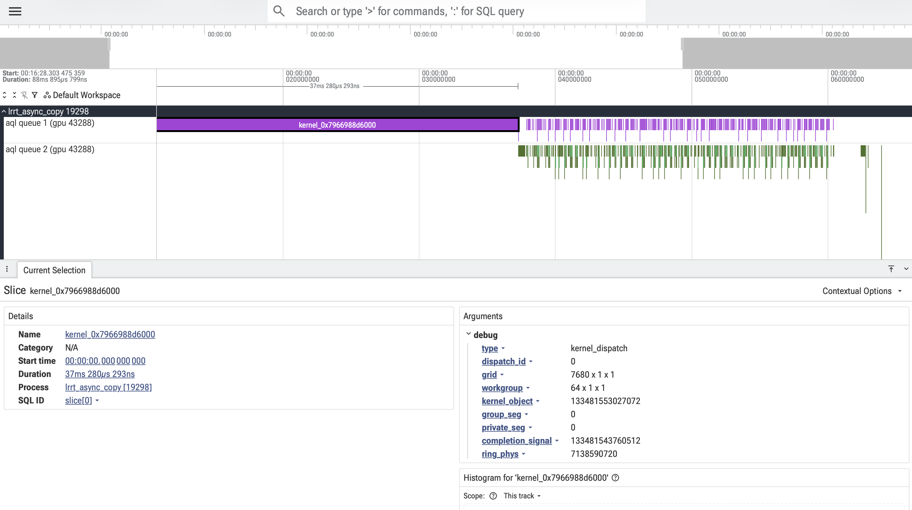

Trace queue activity
Decode HSA AQL dispatch packets, barriers, agent dispatches, and SDMA copy traffic into Perfetto-ready traces.
AMD GPU queue observability
Capture AQL queues, SDMA traffic, and Prometheus metrics from real HIP/HSA workloads without rebuilding the amdgpu driver.
Decode HSA AQL dispatch packets, barriers, agent dispatches, and SDMA copy traffic into Perfetto-ready traces.
Expose Prometheus counters for kernel launches, SDMA copies, and AIS storage traffic during the same capture.
The GitHub Pages perf tracker publishes CI history to gh-pages/perf/ and charts the key counters per run.
These badges are backed by the published JSON on the gh-pages branch.
hsa-snoop writes native Perfetto protobuf traces that separate each discovered AQL or SDMA queue onto its own timeline, making launches and DMA activity easy to correlate.
sudo ./hsa-snoop -- ./my_hip_app
sudo ./hsa-snoop --all
# open traces at https://ui.perfetto.dev
The repository README remains the authoritative technical walkthrough for queue discovery, SDMA decoding, Prometheus support, and hardware-test setup.
The docs deployment workflow updates the site root while preserving the separately published perf/ subtree, matching the split-site pattern used by ROCm-ernic.